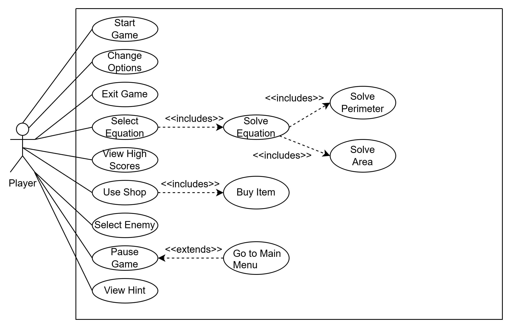
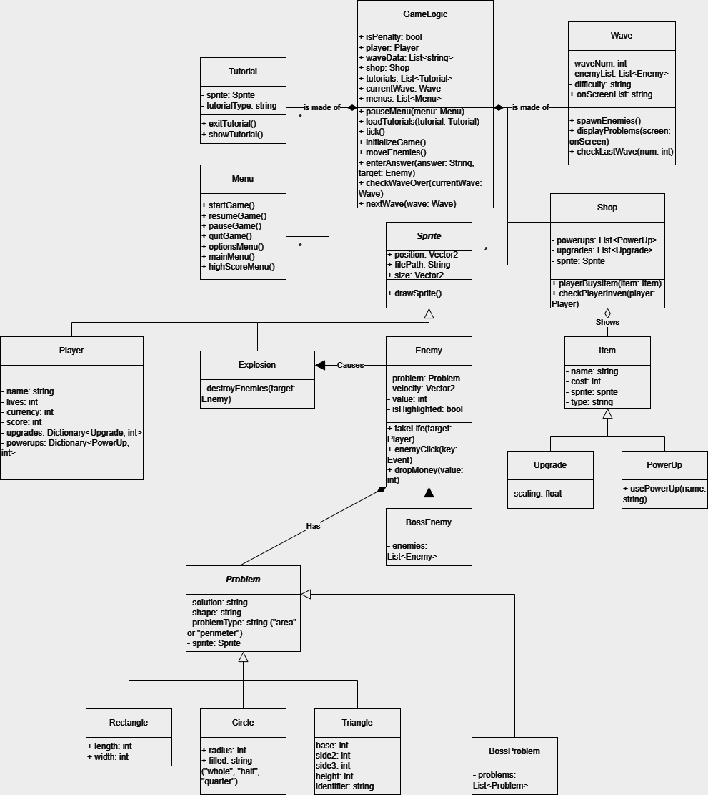
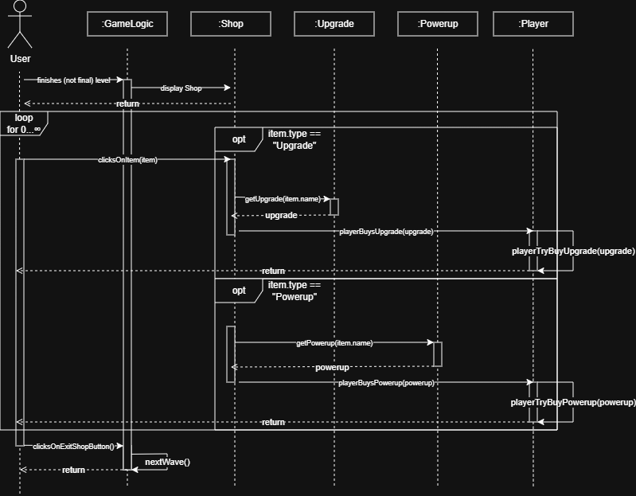
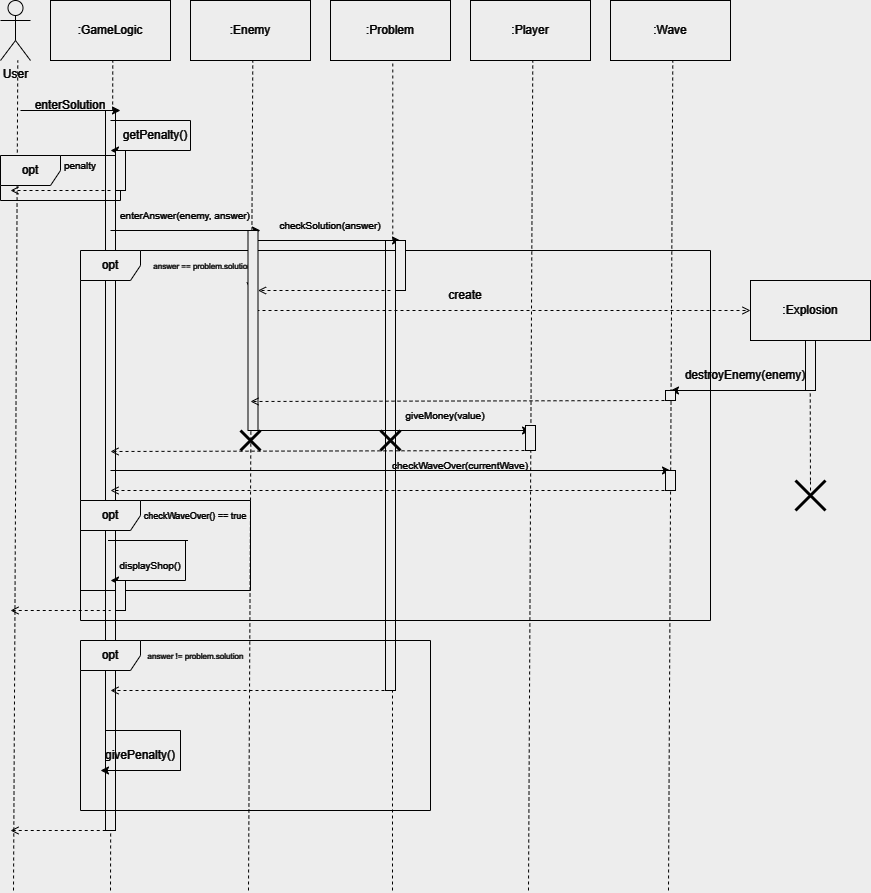
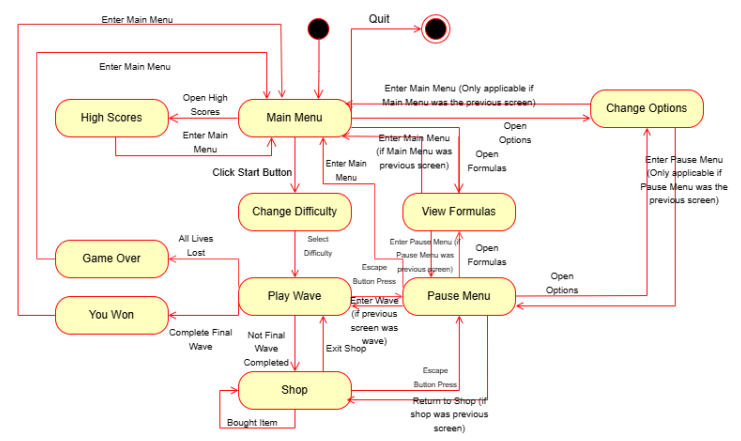

Diagrams
Use Case Diagram

This case diagram shows how the actor, being the player, interacts with the game. Each
“use case” or user function in the diagram is represented in an oval. There are dotted lines
with includes or extends. If a case is included, it implies it's shared with another case;
extends means it's a separate case of the original. The player can perform fundamental
game functions like starting, pausing, and closing the game. There is an options menu the
player can use to adjust settings for volume and whether or not they want pop-up
tutorials. The player can enter their name before starting the game. It will be shown on
their high score screen, which the user can access as well.
In game, the player can select an equation, which is an enemy on the screen. That will
then bring you to the associated problem where the user can enter a solution for perimeter
or area. After completion of a level, the user will be able to open the shop that provides
the option to buy helpful upgrades and powerups. The formula reference sheets will be
available at all stages of the game for the user to access for reference.
Class Diagram

The class diagram shows all the object classes that make up Aerial Areas. Our game logic
handles gameplay aspects. For example, the user entering an answer, what that means for
how the world is going to update, the game startup itself. Our user interface deals with
changing menus, such as the user traversing through the main menu, or pausing the game.
The wave consists of several enemy objects, which have an associated problem, and
problems are broken down by shapes. The player has upgrades and powerups that can be
bought from the shop object. These objects made up the entirety of our game's
functionality.
Sequence Diagrams

This sequence diagram illustrates the process the user may take when entering the shop. They can click
on Powerups and Upgrades to attempt to buy them whether they are able to or not. This
calls the canBuy function which gives the item name and whether it is a Powerup or an
Upgrade to the Shop Class. If the player has enough money, the item is updated in the
corresponding inventory in the giveItem function. When the player wishes to leave the
shop, they click the 'Next Wave' button, which

depicts the user attempting to input a solution to a problem. The Game calls a
function to check the inputted answer against the selected enemy. The selected enemy
will then check to see if the answer is correct, and if so, the Game creates an explosion,
which then handles it along with the enemy, destroying them both, along with any other
enemies caught in the explosion, and then giving the player score and gold for all
enemies defeated. The Game checks if the wave is over and if so, enlists the UIHelper to
switch the scene to the shop before returning control to the player. If the answer the
player gave was wrong, the Game immediately returns control to the player.
State Diagram
